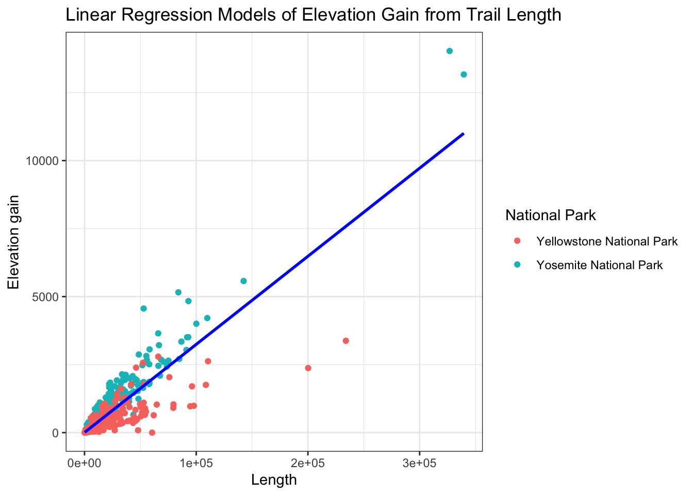

── Attaching core tidyverse packages ──────────────────────── tidyverse 2.0.0 ──
✔ dplyr 1.1.4 ✔ readr 2.1.5
✔ forcats 1.0.0 ✔ stringr 1.5.0
✔ ggplot2 3.5.1 ✔ tibble 3.2.1
✔ lubridate 1.9.3 ✔ tidyr 1.3.0
✔ purrr 1.0.2
── Conflicts ────────────────────────────────────────── tidyverse_conflicts() ──
✖ dplyr::filter() masks stats::filter()
✖ dplyr::lag() masks stats::lag()
ℹ Use the conflicted package (<http://conflicted.r-lib.org/>) to force all conflicts to become errors
np <-read_csv("national_park_trails.csv")
Rows: 3313 Columns: 18
── Column specification ────────────────────────────────────────────────────────
Delimiter: ","
chr (10): name, area_name, city_name, state_name, country_name, _geoloc, rou...
dbl (8): trail_id, popularity, length, elevation_gain, difficulty_rating, v...
ℹ Use `spec()` to retrieve the full column specification for this data.
ℹ Specify the column types or set `show_col_types = FALSE` to quiet this message.
The Data
The dataset for this exam concerns hiking trails in America’s National Parks system. The data are taken from the AllTrails app, which allows users to input new trails and rate existing ones.
Variables in the dataset are:
trail_id: ID number for the trail
name: name of the trail
area_name: National Park where the trial is located
city_name: city where the trail is located
state_name: state where the trail is located
country_name: country where the trail is located
_geoloc: latitude and longitude of the trail
popularity: how often the trail is used (score from 0 to 100)
length: distance covered by the trail (in meters)
elevation_gain: amount of uphill on the trail (in meters)
difficulty_rating: average user rating of trail difficulty
route_type: type of trail (loop, out and back, or point to point)
visitor_usage: (Honestly, I’m not sure what this one is.)
avg_rating: average visitor rating of the trail (1 to 5 stars)
num_reviews: total number of reviews for the trail
features: notable elements of the trail
activities: common uses for the trail
units: This variable is a lie – all the lengths are in meters!
# A tibble: 60 × 3
# Groups: area_name [60]
area_name name popularity
<chr> <chr> <dbl>
1 Acadia National Park The Beehive Loop Trail 43.9
2 Arches National Park Delicate Arch Trail 63.7
3 Badlands National Park Notch Trail 24.5
4 Big Bend National Park Lost Mine Trail 28.6
5 Biscayne National Park Biscayne National Park… 5.89
6 Black Canyon of the Gunnison National Park Warner Point Nature Tr… 16.3
7 Bryce Canyon National Park Navajo Loop and Queen'… 52.0
8 Canyonlands National Park Mesa Arch Trail 36.2
9 Capitol Reef National Park Hickman Bridge Trail 30.0
10 Carlsbad Caverns National Park Carlsbad Caverns Natio… 15.2
# ℹ 50 more rows
Include the following code to show your function works:
np |>recommend_trails("Haleakala National Park", min_elev =1000, min_rating =4)
# A tibble: 3 × 1
name
<chr>
1 Silversword Loop Via Halemau'u Trail
2 Keonehe'ehe'e Trail
3 Kaupo Trail
(10 pts)
map_dfr(.x =c("Sequoia National Park","Joshua Tree National Park","Lassen Volcanic National Park","Kings Canyon National Park","Pinnacles National Park","Death Valley National Park","Redwood National Park"),~recommend_trails(data = np,park_name = .x,min_elev =1000,max_elev =3000,min_rating =4.5,trl_type ="loop"))
# A tibble: 8 × 1
name
<chr>
1 Mineral King to Little Five Lakes Trail
2 Mineral King: Black Rock Pass Loop
3 Butte Lake, Snag Lake, Twin Lake, Silver Lake Loop
4 Summit Lake, Horshoe Lake, Snag Lake, Cinder Cone, Twin Lakes, and Echo Lake …
5 Rae Lakes Trail
6 Palisade Basin
7 North Lake Loop via Lamarck Col and Alpine Col
8 Cottonwood-Marble Canyon Loop
Part 3: Statistical Modeling [25 points]
The two oldest National Parks in the country are Yosemite National Park and Yellowstone National Park.
old_np <- np |>filter(area_name %in%c("Yosemite National Park","Yellowstone National Park"))
`summarise()` has grouped output by 'area_name'. You can override using the
`.groups` argument.
# A tibble: 3 × 3
route_type `Yellowstone National Park` `Yosemite National Park`
<chr> <dbl> <dbl>
1 loop 17205. 33120.
2 out and back 15812. 16729.
3 point to point 43194. 55434.
Yosemite National Park has a longer trail length for each trail type, on average, than Yellowstone National Park does. Yosemite’s average trail length for the loop trail type is almost double Yellowstone’s.
(6 pts)
old_np |>ggplot(aes(x = length, y = elevation_gain, color = area_name)) +geom_point() +theme_bw() +geom_smooth(method ="lm", se =FALSE, color ="blue")+labs (x="Length",y ="Elevation gain",color ="National Park",title ="Linear Regression Models of Elevation Gain from Trail Length")
`geom_smooth()` using formula = 'y ~ x'

b. (4 pts)
yellowstone <-lm(elevation_gain ~length,data =subset(np, area_name =="Yellowstone National Park"))yosemite <-lm(elevation_gain ~length,data =subset(np, area_name =="Yosemite National Park"))
The average steepness of a trail in Yellowstone is 0.0155 meters gained per meter covered. The average steepness of a trail in Yosemite is 0.0406 meters gained per meter covered.
e. (3 pts)
Trails in Yosemite national park tend to have a higher trail steepness than trails in Yellowstone. Since the coefficient is larger for trails in Yosemite (0.0406) than for trails in Yellowstone(0.0155), Yosemite trails have a steeper average elevation gain per meter climbed compared to Yellowstone trails. Also, in the graph above, the blue dots (Yosemite) are also higher than the red dots (Yellowstone). Therefore, the parks do tend to have different trail steepness.